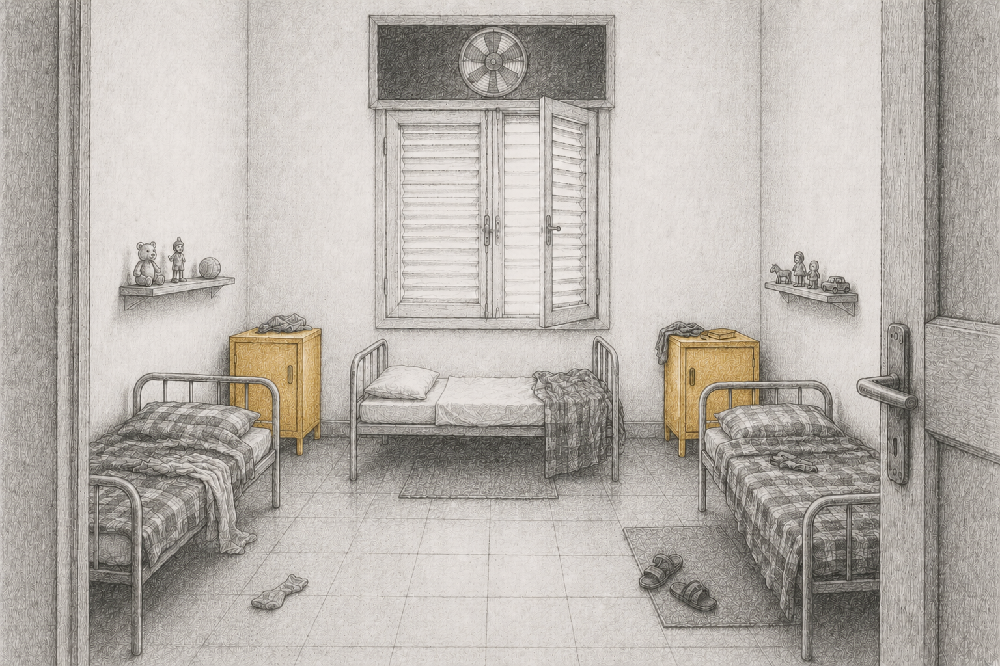
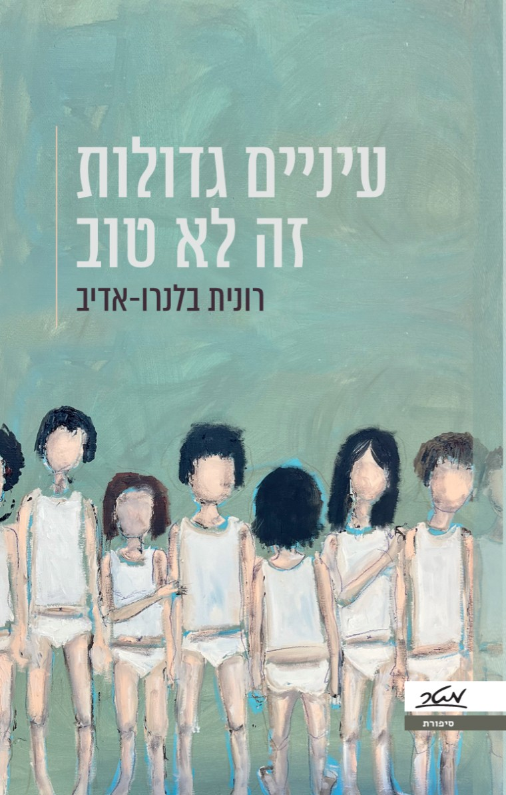
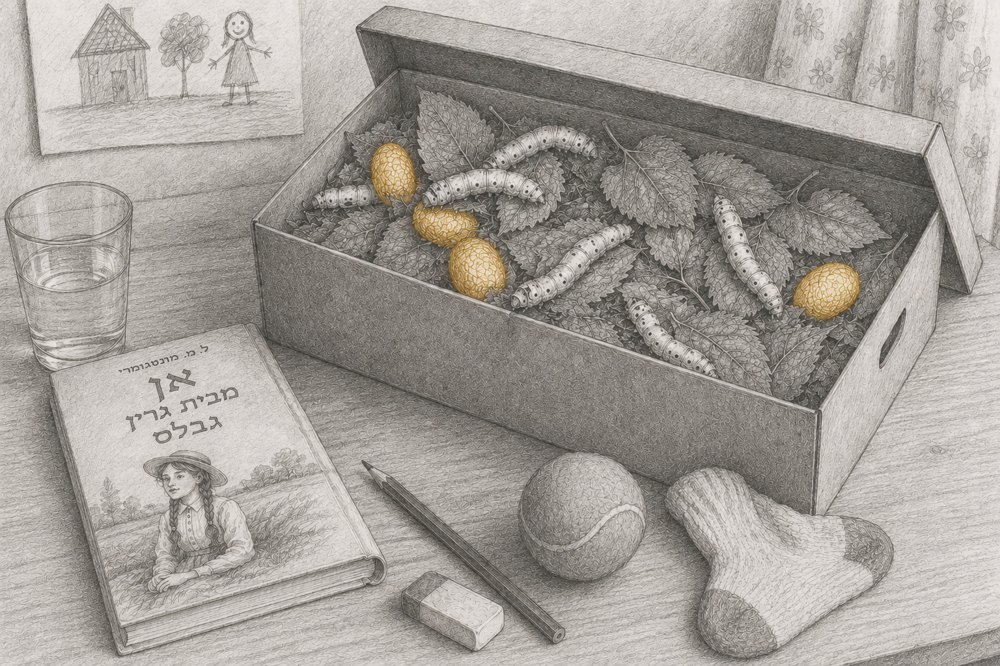
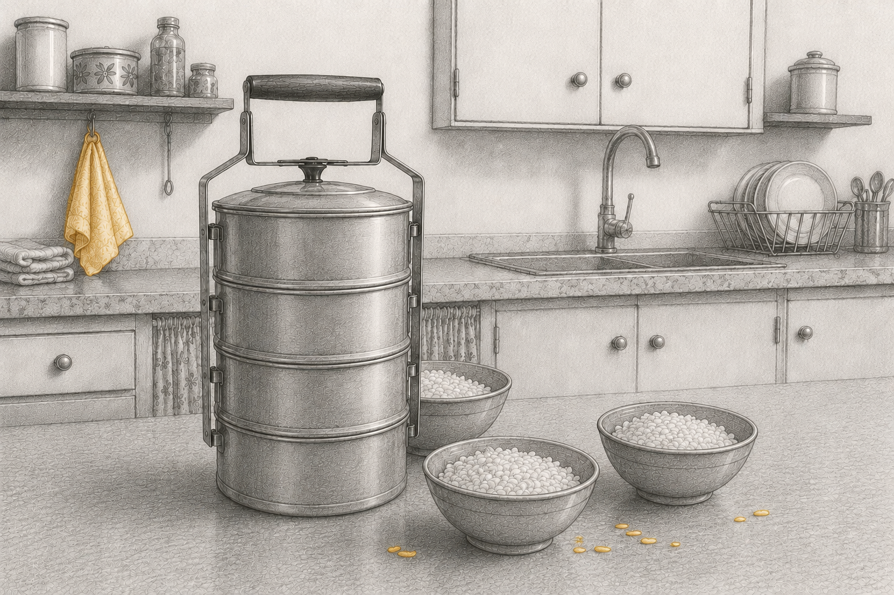

עיניים גדולות זה לא טוב

לילה. ״שומרת לי-לה, בואי לאר-זים!״אני עומדת במרכז של החדר, מרימה את הפנים לשְׁמַרְטַף.במיטות שלידי אין תזוזה. דנה ויותם רגועים, ישנים.הם שומעים את הקריאות שלי, אבל הן לא יעירו אותם.אף אחד לא לימד אותנו, אבל כולנו קוראים לה אותו דבר, באותה מנגינה.אני לא בוכה. אלה לא דמעות בכי, אלה דמעות גרון.״שומרת לי-לה, בואי לאר-זים!״

עולם בפני עצמו
בוקר-צהריים-ערב-לילה. ילדה ערנית בת שבע, בעלת נפש של אמן, פורשת את רגעי היום-יום של ילדותה בקיבוץ של שנות השבעים, שהיתה בו-זמנית ילדות של שפע ושל חסך. בתמימות ילדית נחשפים יופיו ומורכבותו של בית גידול שפס מן העולם, מרחב החיים של החינוך המשותף — צורת גידול גדושה באהבה ודאגה, אך גם טומנת בחובה זרעי פורענות.


חֲדַרוֹכֶל, הֲקָמָה, נוֹשֵׂאוֹכֶל
חֲדַרוֹכֶל, הֲקָמָה, מדידות, נוֹשֵׂאוֹכֶל – לצד המושגים שטבעה החברה היצרנית והיצירתית רחשו בגלוי ובסמוי חוקים וערכים, נורמות מדוברות ושאינן מדוברות של חברה מתבדלת, שהושתתה על קונפורמיות. הילדה קולטת אותם כמו סֵיסמוגרף, קולטת ומתעדת. עיניים גדולות זה לא טוב פותח דלת למאבקים בין פרט לקבוצה; בין להיות קטן ללהיות גדול; בין לאהוב ולהיות נאהב. כל אלה מובאים דרך עולם בפני עצמו – הבֶּיתֶלָדִים.
כשכולם רואים לכולם
כיצד צומחת אינטימיות ביום-יום ללא פרטיות שבו ״כולם רואים לכולם״? כיצד לומדים להיות לבד, שקטים עם עצמנו, כשאין רגע לבד? מי רואה את ה״אחד״ כשהוא תמיד ״אחד מתריסר״? מהי מוגנות ומי מגן על חלומות הלילה ועל חלומות הנפש? עיניים גדולות זה לא טוב הוא רומן צלול ומרגש, פוקח עיניים וצובט בכנותו.
- הוצאה
- מטר
- שנת הוצאה
- 2025
- מחיר
- 99 ש״ח
- דאנאקוד
- 99-2658